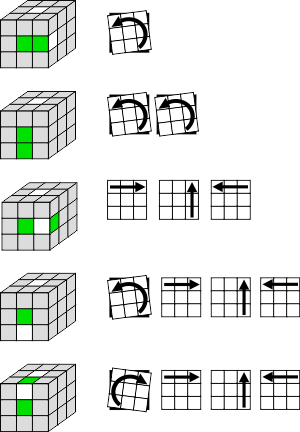
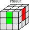
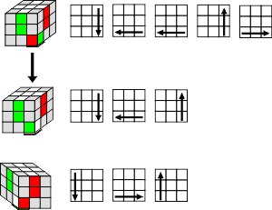
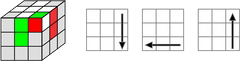
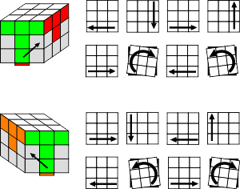
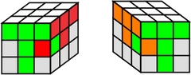
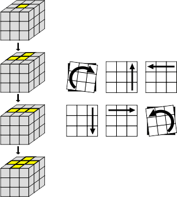
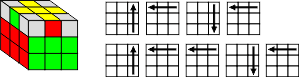
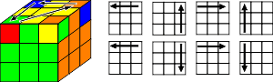
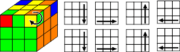

Как собрать Кубик Рубика 3×3
Подробная пошаговая инструкция для начинающих: от белого креста до финальной ориентации углов.
Не знаете, что значат буквы вроде R и U'?
Сначала откройте нотацию ходов 3×3.
Шаг 1 - Сборка первого слоя: крест
- Держите белый центр сверху (White centre сверху).
- Поверните куб так, чтобы зелёный центр был перед вами (Green centre спереди).
- Найдите ребро с цветами зелёный / белый (это реберная деталь с двумя цветами) и переместите его в одну из показанных позиций, сохраняя белый центр сверху и зелёный спереди.
- Выберите вариант (из изображений), соответствующий вашей ситуации, и следуйте стрелкам/шагам, чтобы поставить ребро на место.

Затем, удерживая белый сверху, поверните куб так, чтобы другой центр (другая цветная грань) оказался перед вами, и повторите те же действия. Проделайте это для всех четырёх сторон, пока не соберёте белый крест.

Результат шага 1: белый крест собран...Шаг 2 - Углы первого слоя
Держите белый крест сверху. Поверните куб так, чтобы зелёный центр был перед вами.
- Найдите угловую деталь с тремя цветами, например зелёный / белый / красный.
- Поместите эту угловую деталь между зелёным и красным центрами, не нарушая белый крест. Для этого поворачивайте только нижний слой (D-слой), чтобы не трогать собранный крест.
- Выберите из доступных шагов (схем) тот, который подходит для вашей позиции, и выполните его, чтобы вставить угол на место.

Возможная проблема
Если нужный угол находится в верхнем слое, но не на той позиции или повернут неправильно - поверните куб так, чтобы этот угол оказался в переднем правом верхнем положении, затем выполните нижеприведённую последовательность, чтобы опустить угол в нижний слой.

После установки одного угла - повторите процедуру, поворачивая куб так, чтобы новая целевая грань была перед вами, и доведите все четыре угла первого слоя до нужного положения.
Шаг 3 - Второй слой (вставка рёбер)
Держите белую грань сверху.
- Найдите нужное ребро, например зелёный / красный.
- Если ребро находится в нижнем (D) слое - поверните нижний слой так, чтобы ребро совпало по цвету с центром передней грани.
- Если ребро не в нижнем слое - переходите к разделу С (см. ниже).
Выберите один из алгоритмов для вставки ребра в середину слоя - вправо (A) или влево (B):

- A - Вставка вправо:
U R U' R' U' F' U F - B - Вставка влево:
U' L' U L U F U' F'
Как читать буквы и штрих — в гайде по нотации.
C - Возможная проблема
Если нужное ребро уже во втором слое, но стоит не на своём месте или перевёрнуто - поверните куб так, чтобы ребро оказалось в переднем слое, затем используйте один из алгоритмов A или B, чтобы опустить ребро в нижний слой, а затем снова вставьте его правильно (вернитесь к шагу 3).

Повторяйте шаги A/B, поворачивая центры к себе по очереди, пока не поставите все четыре средних рёбра - второй слой будет собран.
Шаг 4 - Сборка креста верхнего слоя (жёлтый крест)
Переверните куб: белый теперь внизу, жёлтый центр сверху.
На верхней стороне (жёлтой) может быть 0, 2 или 4 рёбер, обращённых вверх - пока не трогаем углы. Выполните следующий алгоритм (ориентируйте куб согласно рисунку/пояснению):
Алгоритм (формирование жёлтого креста): F R U R' U' F'

Повторяйте этот алгоритм, пока не получите жёлтый крест.
Перестановка рёбер верхнего слоя (пермутация)
После того как крест образован, возможно, некоторые рёбра нужно переставить в правильные позиции (чтобы их цвета совпали с центрами боковых граней).
- Поверните верхний слой, пока 2 или 4 рёбра не будут совпадать по цвету с центрами.
- Удерживайте куб так, чтобы правильно стоящие рёбра были сзади и справа.
- Выполните соответствующий алгоритм перестановки рёбер, чтобы поставить их на свои места.

Возможная проблема: если два правильных ребра противоположны друг другу, выполните шаг перестановки один раз, затем поверните верх и выполните снова.
Шаг 5 - Углы верхнего слоя: перестановка и ориентация
Сначала расставим углы в правильные позиции (но они могут быть неправильно повернуты).
- Оцените: у вас будет 0, 1 или все углы уже в правильных позициях (независимо от ориентации).
- Если один угол уже стоит на своём месте - поверните куб так, чтобы этот правильный угол оказался в переднем верхнем правом положении.
- Выполните алгоритм перестановки углов (A) до тех пор, пока все углы не окажутся в нужных позициях.

Проблема: если ни один угол не на своём месте - выполните алгоритм (A) один раз с любым положением (жёлтый сверху), после чего как минимум один угол окажется на своём месте. Затем продолжайте как указано выше.
Далее - поворот углов в нужную ориентацию
Теперь будем поворачивать углы один за другим, пока желтая грань каждого поворачиваемого угла не окажется сверху.
Держите куб так, чтобы угол, который вы поворачиваете, был в переднем верхнем правом положении. Выполняйте последовательность поворотов до тех пор, пока желтая сторона угла не станет сверху (возможно потребуется повторить 1–2 раза). Важно: держите ту же сторону к себе - кажется, что остальные грани «портятся», но это нормальная часть процедуры: после того как повернёте все углы по очереди, куб будет собран.

Продолжайте процесс поворота верхнего слоя (только U-слой между ориентациями), пока не перевернёте все углы в правильное положение - затем куб будет полностью собран.
FAQ
Сколько времени займёт обучение?
Новичку, чаще всего, требуется от нескольких дней до недели тренировок, чтобы уверенно собирать куб по этому методу.
Сколько алгоритмов нужно выучить?
Для базовой сборки достаточно нескольких (обычно 6–10) алгоритмов; продвинутые методы требуют больше.
Можно ли собрать кубик рубика 3×3 для начинающих без схем?
Да, можно собрать кубик рубика методом проб и ошибок, но схемы и инструкции сильно ускоряют процесс и снижают количество ошибок.
Ключевые темы страницы
- кубик рубика
- собранный кубик рубика
- как собрать кубик рубика
- кубик рубика 3×3
- сборка кубика рубика
- как собрать кубик рубика 3×3
- схема сборки кубика рубика
- кубик рубик для начинающих
- инструкция кубика рубика
- кубик рубика пошагово
- алгоритм кубика рубика
- кубик рубика 3×3 для начинающих
- сборка кубика рубика 3×3 для начинающих
- как собрать кубик рубика алгоритм
- схема кубика рубика 3х3
- формула кубика рубика
- собрать кубик рубика онлайн
- кубик рубика 2×2
- алгоритм кубика рубика 3×3
- кубик рубика схемы для начинающих